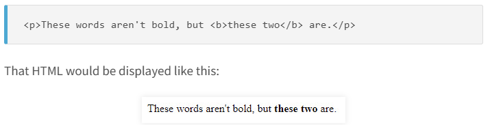

Paragraph Element:
The most basic way of adding text to a web page is the paragraph element. If you've been following along with this tutorial, you've seen this element before, but it's worth repeating, because the paragraph element is one of the most common HTML elements used on most of the websites you visit every day.
<h1> This is heading </h1>
The heading elements:
Like the paragraph element, heading elements are also used to display text on the screen. They're generally used to create section headings.
<h1>This is heading 1 </h1>
<h1>This is heading 2 </h1>
<h1>This is heading 3 </h1>
<h1>This is heading 4 </h1>
<h1>This is heading 5 </h1>
<h1>This is heading 6 </h1>
For example, you might use a heading element to display the title of an essay you're writing, or the name of a chapter in a book. The actual text of the essay or chapter, on the other hand, would use paragraph elements.
Heading elements come in six default levels, <h1> through <h6>, which you can think of as an order of importance. If you put an <h1> on your web page, for example, it's safe to assume that it's the most important section heading and probably at the top of your page, while an<h2> is slightly less and important, and so on.
They also come with some default browser styling, which reinforces that order of importance: the <h2> element is the biggest, the <h2> is smaller, and on like that.
Text formatting elements:
Text formatting elements are used to change the way text looks in certain predefined ways. For instance, here are a few common text formatting elements:
Bold: The <b> element makes its contents bold.
Italics: The <i> element italicizes its contents.
Underline: The <u> element underlines its contents.
Emphasized: The <em> element is also used for itallic
These elements are usually found nested inside of other text elements, such as the paragraph or heading elements, because they are usually only meant to apply to part of the text. For example:

Subscript and superscript
HTML
<sup> and
<sub>Tags:
The
<sup> tag is used to superscript a text whereas the
<sub> tag is used to subscript a text.
Mathematical Equations:
X=3X3+ X2+7X+2
Chemistry:
H2SO4
Example: In above example, we see the use of
<sup> and
<sub> Tags
Text Highlighting
HTML
<mark>Tags:
The
<mark> tag is used to highlighting a text. It has an opening and closing tag.
<mark> This text is highlighted</mark>
This is highlighted text